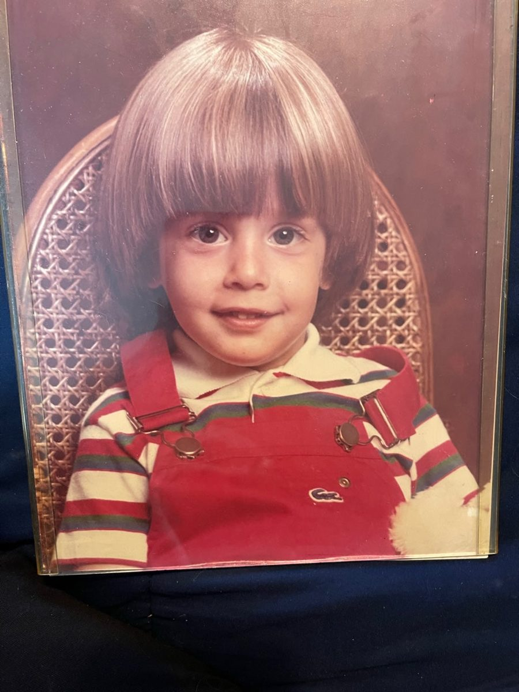
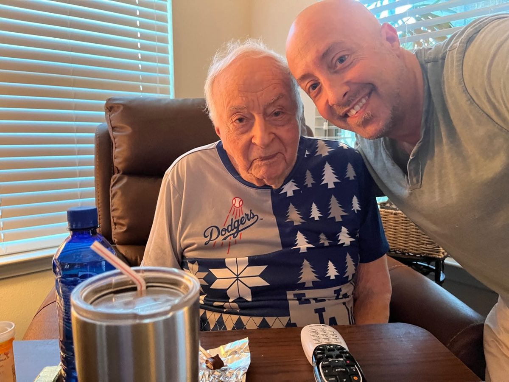
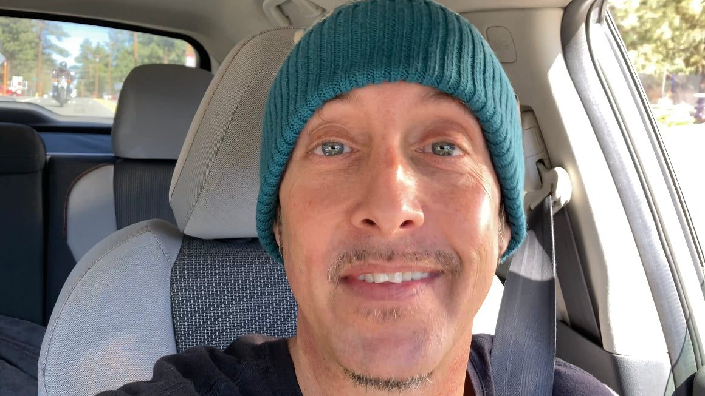

In Nikk’s own words, from the bio he wrote in August 2023.
01
Staring into heaven
My name is Nikkolas Amstadter. Ever since I was a little dude, I always had a fascination with the weather. Almost an obsession growing up in Newport Beach California, we didn’t really get too much inclement weather. So I don’t really understand where my fascination came from, especially my fascination with the snow. I think it had to do with growing up with my friends and their families, who’ve had vacation homes in Lake Tahoe, Big Bear, Lake Arrowhead and Aspen, etc. And when I would see pictures, it just felt like I was staring into heaven. I started this channel when I moved to Big Bear in 2015.
I had moved to Big Bear because I had quite a falling out with a lot of my family and this town was the closest town that actually provided snowfall in the winter time. I always knew how I felt every time I would get to play in the snow; literally felt like nothing could go wrong in my life.

02
Lake Arrowhead
The first time I saw snow was when I was 10 years old when my mom purchased a vacation home in Lake Arrowhead, California until I was 15 years old. We would come up to Lake Arrowhead a couple times a year, typically during the snowfall and those are the best memories I’ve ever had in my entire life, even better than traveling the world. I believe Lake Arrowhead maintained my heart and soul. My whole family truly got along very well, and everyone seemed like they loved each other deeply. I am the baby of seven children but my older brothers would come to the vacation home often with us. For many years, I’ve been yearning for that family unity again, and it almost seems like a lost cause at this point, but I will never give up on reuniting what was once a very close-knit family. We would drive from Lake Arrowhead to Big Bear to go skiing at Bear Mountain Ski Resort. Even though I’ve skied all over Colorado and some in Utah and Alaska, my favorite place to ski is Bear Mountain Ski Resort because of the nostalgia and the memories it illuminates every time I hit those slopes. I know this little bio is going to be all over the place but hopefully you understand where I’m going with it.

03
Where I come from
For the majority of my life from when I was 13 until I was 33 years old, I had an addiction problem. I’ve been through nine separate rehab centers and two sober living houses trying to get it under control. Depression on and off through my younger teen years was a huge culprit in my suffering emotionally. Don’t get me wrong. I had a beautiful childhood. I had an MTV cribs lifestyle until I was about 16 years old. Both my parents came from nothing and became very successful and sadly they don’t have anything left today which breaks my heart but I’m very proud to be the son of these two wonderful people. My dad put himself through UCLA undergrad and Northwestern medical school driving a taxi and my mom became one of the top hundred real estate brokers in the whole country for many many years out of Newport Beach. My mom owned a company called 714 realty; that’s when all of Orange County and parts of LA were still area code 714 and Rupert Murdoch cut my mom a check to be able to put a Prudential office in Newport Beach so he basically bought out my mom and that was another huge gain for my parents. And let me tell you, just the nicest people in the world and my mom is just the most incredibly loving, trusting, and patient person you’ll ever know. My mom’s been part of some pretty major transactions in the real estate industry as well as one of the founders of the committee of 4000 and they put a stop to the biggest land grab in US history at the time by the Irvine Company. I’m very very proud of my parents.
04
The big games
I was always focusing on trying to become a professional baseball player but I never grew so it became very difficult. I had quite the athletic prowess my freshman year of high school as I could throw the ball 87 mph being 5 foot five and no one understood how that was possible. However, the addiction started to come into my life, and it destroyed everything. I’ve been to every single main championship game for all of our big sports in this country. I’ve been to game one of the 1988 World Series. We had season tickets for 30 years to Dodger Stadium. That was probably the biggest baseball game in the history of baseball as far as I’m concerned. I’ve been to a Super Bowl. I’ve been to two NBA finals games and I’ve been to a Stanley Cup finals game into the World Cup in Italy.
I truly had a great life and I still do because of all of you; And when I say I still do I mean emotionally. I don’t have financial happiness, but that’s OK. Whatever my higher power has for me I am definitely happy to take it but I don’t rest on my laurels and I work my butt off every single day to better my life for myself and my beautiful wife. Again, I know I’m all over the place on this bio, so please bear with me.

05
Ten years clean
I am very proud to tell everyone that as of June 23, 2023, I celebrated 10 years clean of alcohol, which was my demon of choice. And I’m very proud. For those of you who struggle with the drink, I want you to know that in the 10 years that I’ve been clean and sober, everything in my life changed when I moved to Big Bear and started a little business. I started a little YouTube channel and I got married. None of this would’ve happened if I was still in the midst of my disease. I’m always here for everyone who needs to chat about what they are going through because through my experience, strength, and hope, I know I can help.
06
The channel
So back to the YouTube channel a little bit. When I moved to Big Bear on May 1, 2015 again, the only reason was for the snowfall. However, an issue came up right away and the issue was I couldn’t afford to buy any thumb drives to save my videos and I was in a panic. So immediately, I thought maybe I could put my videos on YouTube and store them for free, so I always have access to them forever without having to pay anything. I decided immediately to make the videos public because I know when I’m watching it snow for some reason it brings just incredible serenity into my heart. So that’s what I did, never expecting anyone to subscribe and truly expecting everyone to make fun of me because I’m such a geek and a dork. But now it’s been eight years and three months of doing this channel and today’s date is August 25, 2023. It’s been that long since I’ve been doing the channel consistently and it’s turned into something very special and I’ve developed so many incredible friendships and relationships on this channel. I consider that the greatest gift I’ve ever received is my relationships with all of you. You all have had a huge huge impact on my life and the reason I’m still here. There’s no hyperbole being used when I tell you guys you saved my life. I owe you guys everything, including my life.
There’s no hyperbole being used when I tell you guys you saved my life.
07
Every storm
I’ve never missed a single storm in the whole time I’ve been here. I’m very obsessive and compulsive about what I do and I can promise you that I will never miss a storm. I love what I do. I love the fact that the channel can help keep people safe and knowledgeable about what’s going on. I will always put myself in the middle of the storm so many of you don’t have to. I will put myself in danger so many of you do not have to. Our town relies on tourism, and without all of you coming up here to visit and spend money, I’m cognizant of the fact that I don’t get a chance to live here without you guys. Therefore, you guys are the most important people to me and I really do love each and every single one of you with all of my heart and soul.
I will always put myself in the middle of the storm so many of you don’t have to.
08
Thank you
Many of you realize you will get out of life what you put into it. Although this isn’t the path I envisioned, the path I am on now has been something incredibly uplifting and possibly the best thing that could’ve ever happened to me so I am extremely grateful for each second of every day to be doing what I’m doing. I’m always here for you guys. I love you guys and again you guys have given me peace of mind and giving me hope, and given me a purpose in life. I will never let you down. Of course I am human. I’m far from perfect but as this channel has grown, I haven’t changed. I will continue giving you guys the best of myself without any fabrication at the risk of some people being turned off, but I want people to like me and appreciate me for who I am, not who I want you to think I am.
I love you guys very much and thank you so much for reading my bio. And if I can be of any assistance to any of you, don’t hesitate to get back to me. Let’s make this channel soar and let’s show everyone who thinks that they can’t do it, that anything is possible – as long as you believe in what you’re doing, have a passion for what you’re doing, and you work your butt off.